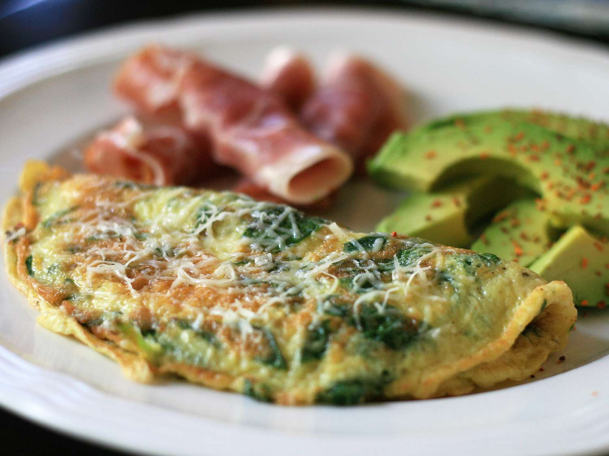

Home
Baby Sinach omelet

Enjoy this spinach omelet with tender baby greens, Parmesan cheese, and a little nutmeg cooked together for the perfect start to the day.
Ingredients:
- 2 eggs
- 1 cup of torn spinach leaves
- 1 1/2 of grated Parmesan cheese
- 1/4 teaspoon onion powder
- 1/8 teaspoon ground nutmeg
- Salt and pepper to taste
It takes around 25 minutes to make
- Beat eggs in a bowl, and stir in baby spinach and Parmesan cheese. Season with onion powder, nutmeg, salt, and pepper.
- Spray a small skillet with cooking spray and place over medium heat. Once warm, add in the egg mixture and cook until partially set, about 3 minutes. Flip with a spatula, and continue cooking, 2 to 3 minutes.
- Reduce heat to low and continue cooking, 2 to 3 minutes, or until omelet reaches desired doneness.